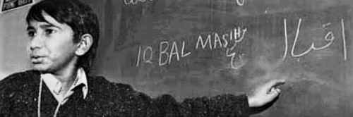

"A Bullet Can't Kill A Dream"
Iqbal Masih became a debt slave in a carpet factory in Pakistan when he was a child. Five years later he was set free. He gave other children the courage to leave their owners. Iqbal was threatened by the carpet factory owners and was murdered on 16 April 1995. He is a symbol for the struggle against child labor and in 2000, he received the first World’s Children’s Prize (after his death). The prize has another name in memory of Iqbal: Iqbal Masih Award.
Iqbal is about five years old when he has his first working day in the carpet factory. Later, when his mother Anayat needs money to pay for her older brother’s wedding., she takes out a loan from a carpet factory owner called Ghullah. The loan, or ‘peshgi’, is in Iqbal’s name. That means that Iqbal owes Ghullah the 5000 rupees (100 US dollars). Now Iqbal is a debt slave and Ghullah is in charge of his life. When Iqbal gets home from the carpet factory in the evenings, he collapses into bed and falls asleep. Sometimes Ghullah wakes him around midnight. “We have a carpet delivery that has to be finished. Come on, get up.” The peshgi debt means that Iqbal has to go with Ghullah, who drags a sleepy Iqbal through the narrow streets to the carpet factory. If Iqbal falls asleep at work, he is woken up by a blow from the carpet fork.
One day, a little boy in the carpet factory has a high fever. Ghullah, the owner, ties the boy’s feet together and hangs him upside down from the fan on the ceiling. “I’m the one who decides when you work,” roars Ghullah. In that instant, Iqbal decides he’s had enough. He starts to run way from work as often as he can. Iqbal and his friends take the chance to run away when Ghullah isn’t there. They play all day without worrying about what awaits them. The next morning, Ghullah comes to their homes to get them. He’s furious, and he beats the boys with a carpet fork or whatever is within reach. Then he chains them up. Sometimes two days pass before he releases them again.
Early one morning in October 1992, Iqbal runs away from work. He jumps onto the back of a tractor, where many adults and children are already sitting. One hour later, they arrive at a BLLF meeting. This is the first time Iqbal sees the leader of BLLF, Ehsan Ullah Khan. He listens with interest when Ehsan talks about the law against debt slavery. Ehsan asks Iqbal to tell the other children about his experiences. At first Iqbal doesn’t dare, but then he steps up to the microphone. Ehsan gives Iqbal a ‘freedom letter’. On it is written the law that bans debt slavery and the sentence for people who use debt slaves. The problem in Pakistan is that people don’t obey the law, and the police and courts often help factory owners rather than poor people. Ghullah refuses to let Iqbal leave the carpet factory. But Ehsan doesn’t forget the little boy, and he asks some of his colleagues to find out more and help Iqbal to freedom. Iqbal is delighted to be able to start attending ‘Our own school’, as the BLLF school for former debt slaves is called. He tells his friends and children in other carpet factories that they don’t have to stay with their owners any longer. In the Muridke area, children start leaving carpet factories in their hundred sand thousands. Iqbal speaks at meetings. Heal ways ends his speeches by saying: “We are…” And all the children respond: “FREE!”
Iqbal now lives in Lahore with BLLF. The first time he comes home to visit, Ghullah the owner of the carpet factory says: “You have to come back to work. Then the other children will come back too.” But Iqbal refuses. Another carpet maker threatens Iqbal’s mother. He says he’ll kidnap her and Iqbal if Iqbal doesn’t return to work or pay off the debt that made him a debt slave. A third carpet maker says to Iqbal’s little sister Sobia: “Your brother walks about like a judge in the streets when he comes home. But one day we’ll get him.” “Shut up old man,” says Sobia, who has never dared to be rude to an adult before. “Watch out or we’ll kill you too,” replies the carpet maker.
In October 1994, Iqbal visits Sweden. He tells school children about how life is for debt slave children in Pakistan. Many newspapers write about him, and he is featured on lots of TV programmes. In December1994, Iqbal flies to the USA, where he is given an award by Reebok for fighting for the rights of debt slave children. Iqbal is also ‘Person of the week’ at one of the USA’s largest TV companies. Iqbal returns to Pakistan. On the morning of Easter Sunday, 16 April 1995, he takes the bus home to Muridke. That evening he joins his relatives Lyaqat and Faryad Masih, who are taking food to Lyaqat’s father who is watering his fields. All three of them sit on the same bike. It is eight o’clock and it’s dark. When the boys are half way there, they heart wo gunshots, which kill Iqbal. Faryad can’t write, so on the night of the murder, he has to put his thumbprint at the bottom of a blank piece of paper. Then the police write whatever they like and claim that Faryad has signed the paper to say that it is true.
Author: Wajeeha Mushtaq
All rights are reserved.